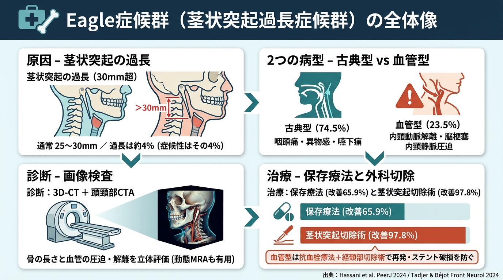
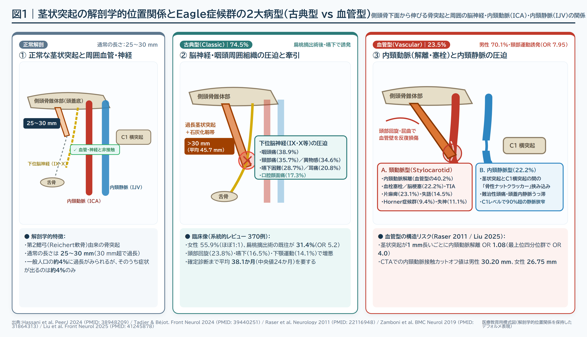
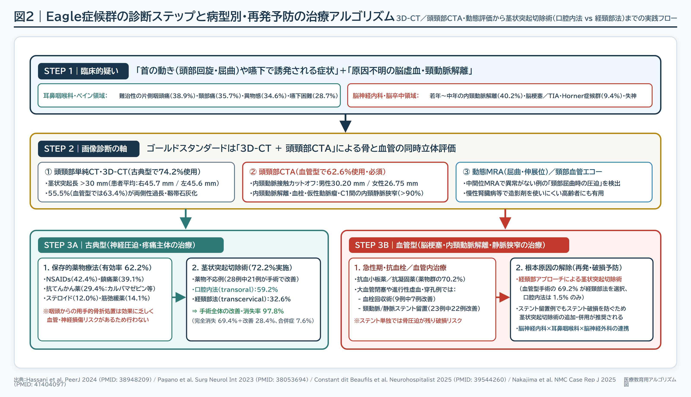
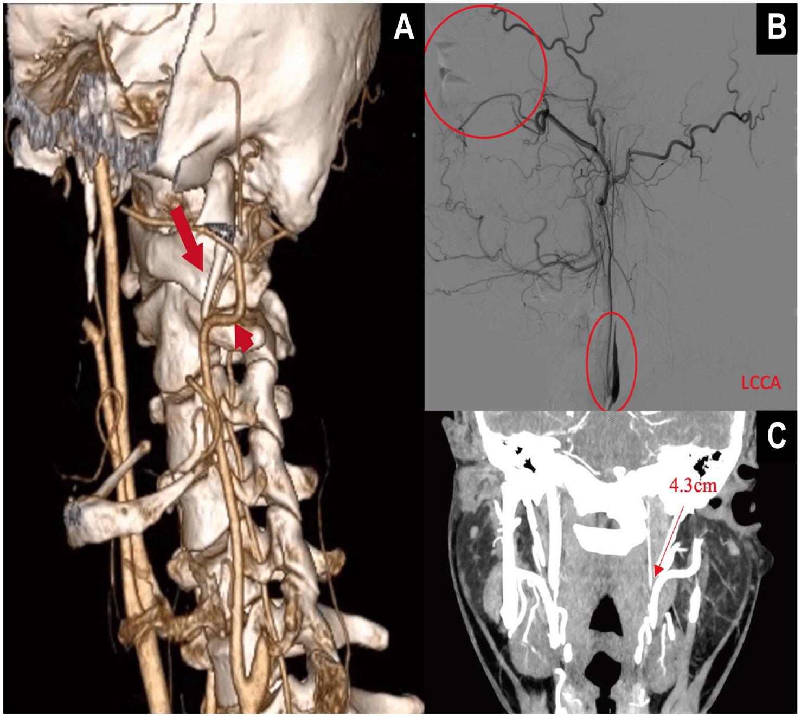
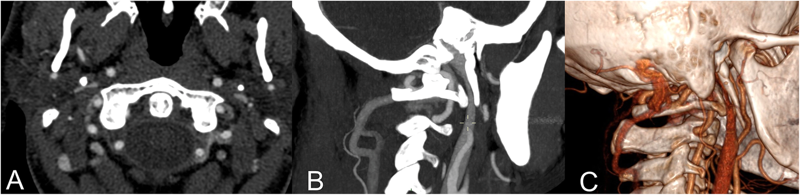
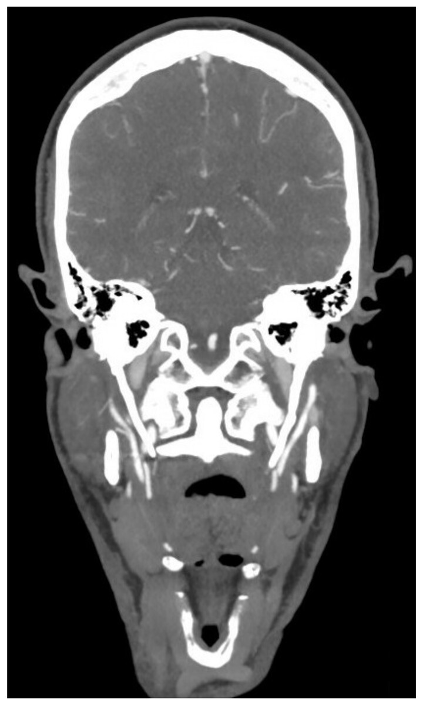

Eagle症候群（茎状突起過長症候群）の診断と治療｜全体図解・原寸図版
各画像をタップ／クリックすると原寸ファイルが開きます。スライド一覧・PDF（16枚）はこちら ／ 解説動画（YouTube）はこちら 。

全体要約インフォグラフィック： 通常の茎状突起長は25〜30 mmであり、30 mm超の過長が周囲の神経や血管に干渉します（一般人口の約4%に過長、そのうち症候性は約4%）。▶ 原寸画像（1376×768 px）を開く
解剖・2大病型と診断・治療アルゴリズム

図1： 正常な茎状突起（25〜30 mm）と、古典型（下位脳神経圧迫）・血管型（内頸動脈解離・内頸静脈の骨性ナットクラッカー圧迫）の構造比較。▶ 原寸画像（3200×1840 px）を開く

図5： Eagle症候群を疑う臨床所見から、3D-CT／頭頸部CTA・動態MRAによる画像評価、古典型・血管型それぞれの治療選択までの実践フロー。▶ 原寸画像（3200×1840 px）を開く
オープンアクセス論文（CC BY 4.0）引用臨床画像

図2（論文引用臨床画像）： 血管型Eagle症候群に伴う左内頸動脈解離（3D-CTAボリュームレンダリング像・DSA rat-tail所見・左茎状突起4.3 cm）。出典：Liu Y, et al. Front Neurol 2025;16:1699139, Figure 5（CC BY 4.0 無改変転載）。▶ 原寸画像（1477×1323 px）を開く

図3（論文引用臨床画像）： 内頸静脈型（Eagle jugular syndrome）における過長茎状突起と第1頸椎（C1）横突起による骨性ナットクラッカー狭窄のCTA所見。出典：Zamboni P, et al. BMC Neurol 2019;19:333, Fig. 1（CC BY 4.0 無改変転載）。▶ 原寸画像（1946×476 px）を開く

図4（論文引用臨床画像）： 虚血性脳卒中精査で判明した両側性Eagle症候群の冠状断CTA像（患者左49.5 mm、右42.0 mm）。出典：Hassani M, et al. PeerJ 2024;12:e17423, Figure 2（CC BY 4.0 無改変転載）。▶ 原寸画像（720×1200 px）を開く